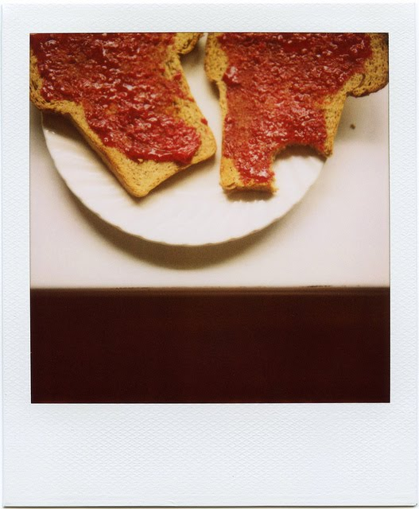
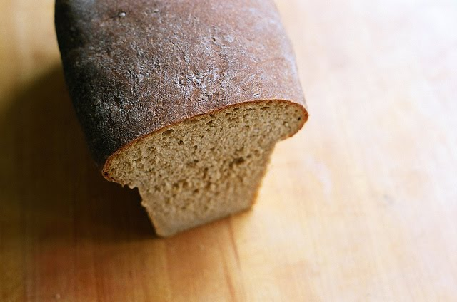

Tag: toast
It is called toast
Thank you for the many cheers and kind words about our anniversaries. You are so good to us! We went to Bellingham to celebrate over the weekend – which, in our world, means Monday and Tuesday, the days when Delancey is closed – and I regret to report that the dinosaur graffiti has been painted over. There’s a cafe there, and they put in some outdoor seating, so I guess they wanted to spruce the place up. The only good news is that the graffiti was painted over badly, with white paint, so if you squint, you can still make out the curving neck of the brontosaurus. Shine on, dinosaurs!
I should also report that I have made a discovery, and it is called toast. I understand that most people discover toast as teething babies, and that this makes me about 31 years late to the party. But I am okay with this, because it means that I have 31 years of toast-eating to catch up on, and that is a lot of toast to look forward to.

It’s not that I had never eaten toast before. I want to be clear about that. I have eaten a lot of toast. But if you’ve been reading here for a while, or for any length of time at all, you probably know that I’ve tended to spend my morning hours in the company of granola. I’m crazy for granola, and I am also deeply boring. I’ve been making my own for close to ten years, and I’ve eaten it almost every day. On the other days, I’ve had toast, or pancakes, or French toast, or scones, or muffins, or fried eggs, because that’s what people do, but mostly, I eat granola.
{kind=link}
But then. A couple of months ago, the granola jar was empty, and I had some bread on the counter. It was veering in the direction of stale, so I decided to toast it. Whoop de doo. No big deal. I didn’t put much thought to it. I made some coffee, set the toaster dial to medium, slid a slice of bread in, got out the butter and jam, smeared them on, and sat down to eat. And there it was, boom, as though I had never tasted it before: crisp at the edges, a faint chew at the middle, sweet in the way that browned things taste sweet, juicy with hot fat and cold fruit. I understood toast. I cut another slice.

The world doesn’t really need a recipe for toast, and I’m not going to try to give you one. The esteemed John Thorne devoted twelve pages to the topic in his book Pot on the Fire, if you’re interested, and it’s a very good read. No one can top John Thorne, and I am willing to bet that no one can top John Thorne’s toast. But technique aside, I will tell you one thing that I have come to believe: the bread is key.
{kind=link}
The best breads for toasting are dense and damp-crumbed. If you toast a flimsy bread, the kind that’s so soft that you can wad up a slice of it in your fist without even using any muscles, the result will be something akin to a piece of crusty old foam that you might find popping out of the busted seat of a 1960s Chevy. You do not want to eat that. This morning, I had a couple of slices of pain de campagne from a bakery, one of those breads with a thick, shattery crust and a shiny, chewy crumb, and it was excellent. But my favorite bread for toasting is a homemade one, a loaf that I’ve made three times in as many weeks, from Good to the Grain, by Kim Boyce.

I have to admit that I did not come to this book unbiased. I heard about it from my friend Luisa, who is apparently also into toast right now, how weird and terrific, and who was, in her previous work life, the book’s editor. Luisa told me that Kim was onto something good, and so I had high hopes when I tried my first recipe, the oatmeal sandwich bread on page 130.
It’s probably the most unassuming recipe title in the book, so if you’re thinking Booooring, I won’t blame you. But it’s a top-notch bread, and once you try it – toasted, ideally – you’ll see why I am going on and on like this about toast. This bread is my everyday ideal: dense and hearty, but not heavy, and very fragrant with the natural sweetness of oatmeal and wheat. Prior to trying this recipe, I was buying a locally made whole wheat loaf at the grocery store, and it was nice, but it was sweetened with honey, and the flavor was too strong and too sweet. This is much better. It uses basic pantry ingredients, and once you’ve got them, you can bake whenever you want, and though it takes about four hours from start to finish, the actual work time is very brief, so you could start it before dinner, finish it by bedtime, and spend most of the intervening hours lying on the couch. The kitchen will smell like yeast, molasses, and a million bucks, and in the oven, the loaf will bloom up and out of the pan like some sort of fantastic mushroom. It’s gorgeous, especially smeared with apricot or raspberry jam, or even just butter, or, better yet, butter and a fine dust of crunchy salt. And that’s only breakfast, and you’ve got the whole day ahead.
Oatmeal Sandwich Bread
Adapted from Good to the Grain, by Kim Boyce with Amy Scattergood
I’ve noticed that some reviews of this book complain that it calls for ingredients using only volume measures, not weight measures. I don’t find that to be a deal-breaker, but it is important to measure the ingredients correctly, particularly the flours. Before you scoop any flour out of the container, take a spoon and stir the flour, lifting and loosening it. (It tends to get packed down, and you don’t want to measure packed flour.) Now, to measure, spoon the flour into your measuring cup until it heaps above the rim. Then sweep the back of a dinner knife, or any other straight utensil, across the top to level it, letting the excess flour fall back into the container.
This recipe is made for a standard-size loaf pan, one that measures about 9 by 5 by 3 inches. But mine is on loan to Delancey, so I’ve been using a different pan, one that I picked up at a thrift shop a couple of years ago. It measures 10 by 3 ¾ by 3 inches, and I love the long, skinny loaf it makes.
One last thing: the original version of this recipe calls for 1 tablespoon of kosher salt. That sounds like a lot, but kosher salt isn’t very salty, and I found the bread a little bland. Instead, I now use table salt, and I like the result when I use 2 ¼ teaspoons.
Oh, and this bread is also good for sandwiches, as you might have guessed from its title.
Grease a large bowl and a loaf pan (see above) with butter or cooking spray.
In the bowl of a stand mixer, combine 2 cups warm water, the yeast, and molasses. Stir briefly, and then allow the yeast to bloom for about 5 minutes. Add the flours, oats, and butter, and stir to mix. The dough will look rough and shaggy. Cover with a towel, and let stand for 30 minutes. [This rest allows the dry ingredients to absorb the liquids, making for a dough that’s easy to work with and even-crumbed.]
Attach the bowl and the bread hook to the mixer. Add the salt, and mix on medium speed for 6 minutes. The dough should come together around the hook and slap around the sides of the bowl without sticking. If the dough is sticking, add a tablespoon or two of bread flour, sprinkling it down between the dough and the sides of the bowl. [Alternatively, you can knead by hand for about 15 minutes, adding flour as needed.] The dough should be soft and supple and slightly sticky.
For the first rise, scrape the dough onto a lightly floured work surface and knead it a few times. Put the dough into the greased bowl, cover with a towel, and leave it to rise for about 1 hour, or until it is doubled in size. To see if it’s ready, gently push a floured finger into it. If the dough springs back, it needs more time; if the dimple remains, it’s ready for the next step.
To shape the dough, scrape it onto a floured work surface. Press down on it, working it into a square shape, taking care to depress any bubbles. Fold the dough down from the top to the middle, then up from the bottom to the middle. Next, bring the newly formed top and bottom edges together, pinching the seam to seal. Pinch the sides together, and roll the shaped dough back and forth, plumping it so that it’s evenly formed and about the size of your pan. Place the dough in the pan with the seam side down, and press it gently into the corners of the pan.
For the second rise, cover the dough with a towel, and let it rest in a warm place for about 1 hour, or until the dough rises to half again its size. While the dough is rising, preheat the oven to 400°F.
When the dough has finished its second rise, bake for about 40 minutes, rotating the pan halfway through. The loaf is ready when the top crust and bottom crusts are nicely browned. [Boyce says that the top crust should be the color of molasses, but mine never gets that dark.] To see if the bread is ready, give the top of the loaf a thump with your hand. If it sounds hollow, it’s ready; if not, give it another few minutes in the oven. Remove the finished loaf from the pan and cool completely on a wire rack. Resist the urge to cut in until it’s fully cooled, so that the crumb has time to set and the flavor can develop.
Note: This bread keeps beautifully at room temperature. I keep mine in a plastic grocery bag, tied shut, and I set it on the counter with the cut side down. It stays good that way for 4 or 5 days, easy.
Yield: 1 loaf